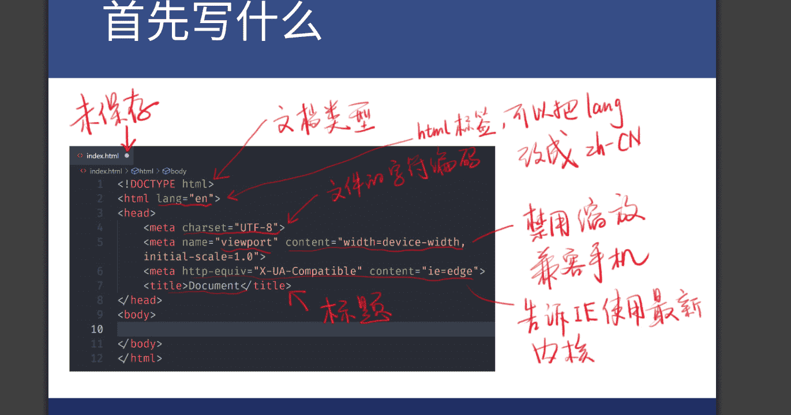

HTML入门笔记1
- HTML是由谁发明的？
- Tim Berners-Lee(李爵士)在1991年发明了www（World Wide Web）
HTML常用的表章节的标签有哪些，分别是什么意思？
- h1~h6:标题标签，h1最大h6最小
- section:章节标签，可以有多个章节标签，章节标签里也可以嵌套章节标签，一个章节标签表示一块要写的内容
- article:文章标签
- p:段落标签
- header:表示头部，在body的头部
- footer:脚部，在body的底部
- main:主要内容，可以把想要表达的主要内容写在这个标签里
- aside:旁支内容
- div:div标签
全局属性有哪些？
- class:不唯一
- contenteditable:可编辑的
- hidden:在元素上加上他直接隐藏，可以用display:block;取消隐藏
- id:全页面唯一(不到万不得已不要用)
- style:一个标签的样式
- tabindex:TAB键可以选择内容，它是通过给要选择的内容加上tabindex属性实现的值为自然数，
tabindex=1时表示按一下TAB来到这里，特殊值"0"为最后一个访问，"-1"：永远不会访问到我
- title:鼠标浮上去会显示""里的内容
- 注：diplay:none;也会使元素隐藏
- 怎么把style变成显示出来的元素呢？
- 把style放在body里再给style标签加上isplay:block;就显示了，再给他加上contenteditable就可以在页面上编辑样式了
- HTML的起手式改写一些什么？
- 
常用的内容标签有哪些，分别是什么意思？
- ol+li:有序列表，前面有12345
- ul+li:无序列表，前面小圆点
- dl+dt+dd:描述列表，dl描述，dt描述对象，dd描述内容
- pre:保留HTML里原有的内容格式
- hr:分割线
- br:换行
- a:链接
- em:会加粗，表示语气强调
- strong:会加粗，表示内容重要
- code:这里的内容同等宽度
- q:引述
- blockquote:换行引述